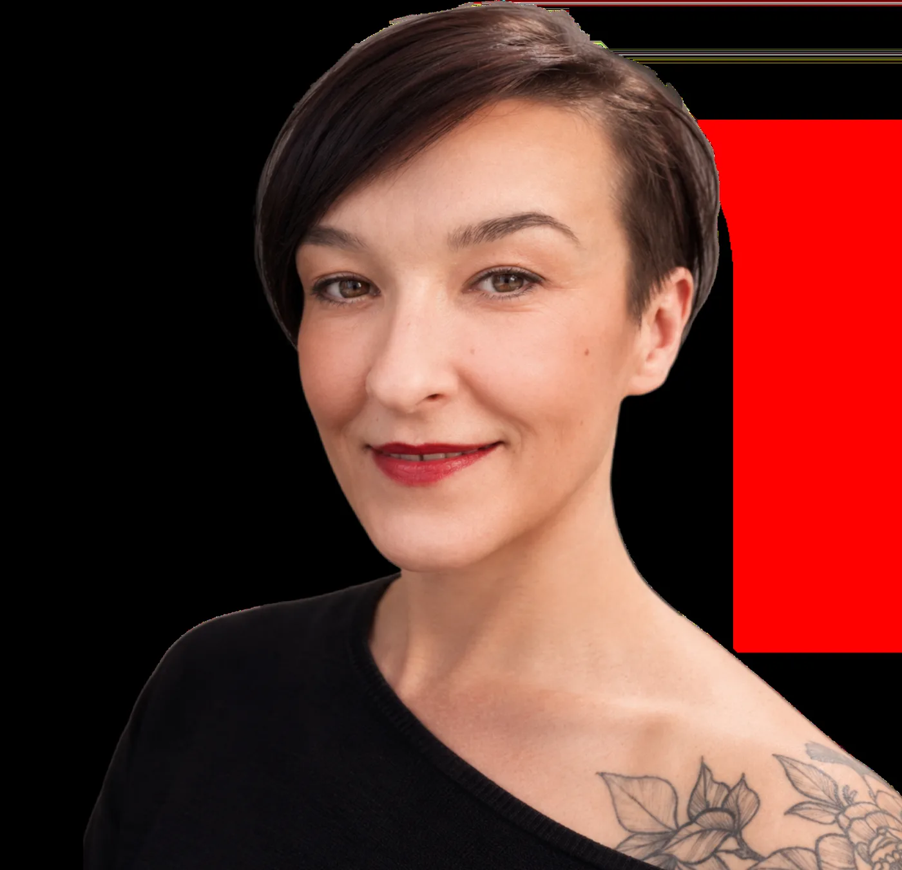

KATTOO
KATTOO
Drawing & Detail
Malerei, Zeichnung, Entwurf und Atelierarbeit – ein eigener künstlerischer Raum neben dem Tattoo-Portfolio, bewusst als separate Subsite geführt.
Hier lebt alles, was nicht in die klassische Tattoo-Galerie gehört: Skizzen, freie Arbeiten, Farbe, Experimente und Einblicke in Kathis Arbeitsprozess.
Der Bereich bleibt vom Hauptportfolio getrennt, ist aber jederzeit direkt über die Navigation erreichbar.
